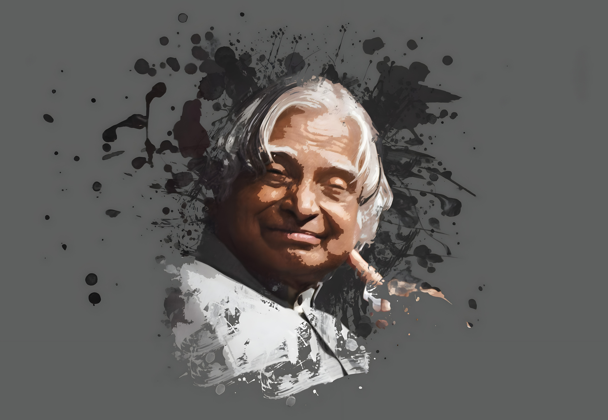

Pride of the Nation
Dr. A.P.J. Abdul Kalam
Aerospace Scientist, President of India and 'Missile Man of India'.

Avul Pakir Jainulabdeen Abdul Kalam was an Indian aerospace scientist who
served as the 11th president of India from 2002 to 2007. He was born and raised in Rameswaram, Tamil
Nadu and studied physics and aerospace engineering
- Born - October 15, 1931, Rameswaram, Tamil Nadu, India
- Died - July 27, 2015 (age 83), Shillong, Meghalaya, India
- Occupation - Scientist, Politician, Author and Engineer
- Title - President of India, Missile Man of India
- Known for - Playing a pivotal role in India's Pokhran-II nuclear tests, Scientist and science administrator, mainly at the Defence Research and Development Organisation (DRDO) and Indian Space Research Organisation (ISRO)
- Awards - 1981: Padma Bhushan, 1990: Padma Vibhushan, 1997: Bharat Ratna Bharat Ratna
- Books and Publication - Wings of Fire, India 2020, Ignited Minds